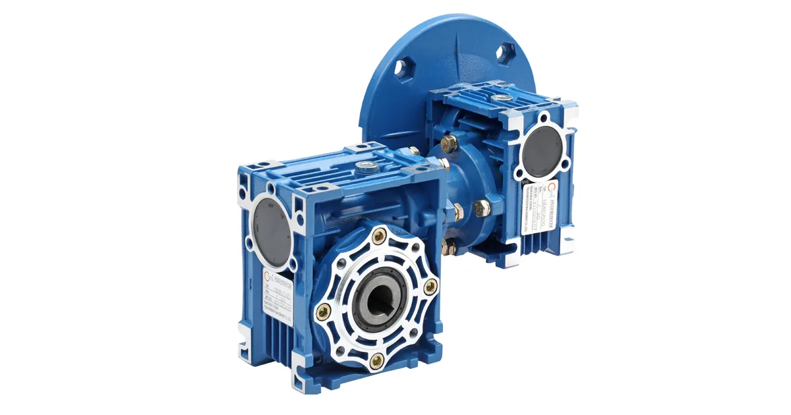
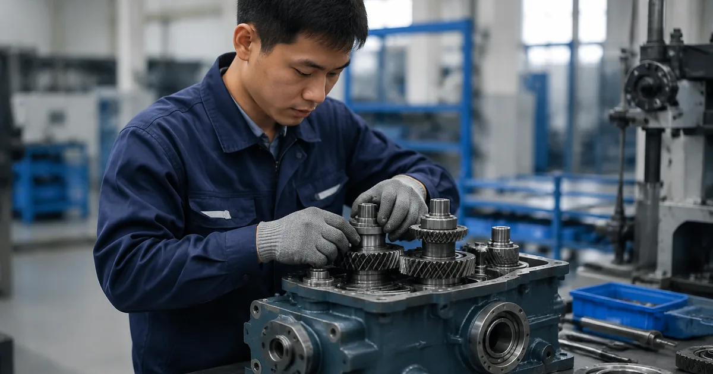

Собственное производствоПромышленные редукторы для производителей оборудования•Отгрузка по всей России•Аналоги SEW, NORD, Bonfiglioli без переделки рамы•Расчёт и КП за 15 минут•Гарантия 36 месяцевПромышленные редукторы для производителей оборудования•Отгрузка по всей России•Аналоги SEW, NORD, Bonfiglioli без переделки рамы•Расчёт и КП за 15 минут•Гарантия 36 месяцев
Главная›Блог›Монтаж редуктора Siemens: соосность, затяжка и первый пуск
Эксплуатация
Монтаж редуктора Siemens: соосность, затяжка и первый пуск
Опыт инженеров Завода Редукторов · чтение ~10 минут
Редуктор Siemens приходит на объект заправленным под конкретное монтажное положение, и это первое, что нужно сверить с шильдом. Ошибки, заложенные в день установки, проявляются через месяцы и не покрываются заводской гарантией. Разбираем порядок работ: от входного контроля до контрольной протяжки после обкатки.
Сразу о главном. Готовой таблицы «серия Simogear → типоразмер ZR» мы не публикуем и из каталога производителя не выводим. Взаимозаменяемость определяют присоединительные и габаритные размеры, а не совпадение крутящего момента. Подбор по этой марке делает инженер по шильду, фото узла или габаритному чертежу; аналог ZR считаем под задачу, цена — по запросу.
Входной контроль перед такелажем
Шильд читают до того, как стропальщики возьмут редуктор: полное обозначение указывает серию линейки Siemens, передаточное число и монтажное положение, под которое залито масло. Если фактическая установка отличается от заказанной, менять положение на объекте без пересчёта уровня нельзя — это голодание или вспенивание.
Механику проверяют вручную: входной вал проворачивают и слушают закусывания и хруст, осматривают манжеты на подтёки. Сапун должен быть открыт: заглушённая транспортная пробка или залепленный краской сапун дают рост давления в корпусе и выдавливание масла через манжету.
Присоединительные размеры сверяют с рамой до подъёма: диаметр выходного вала, шпоночный паз, диаметр и толщину фланца, расположение и диаметр отверстий под лапы. Именно они, а не момент, решают, встанет ли редуктор на существующую плиту.
Плита, лапы и фланцы
Опорная поверхность должна быть жёсткой и плоской; неплоскостность выбирают подгонкой прокладок, а не затяжкой болтов. Когда корпус подтягивают к кривой плите, в него закладывается постоянное напряжение, и первыми его чувствуют подшипники выходного вала.
Для лапового исполнения контролируют прилегание всех опор: щуп не должен проходить под опорой при незатянутом крепеже. Для фланцевого исполнения важна перпендикулярность привалочной плоскости к оси вала машины — перекос фланца даёт ту же радиальную нагрузку, что и несоосность.
Типовые ошибки монтажа редуктора Siemens: признак, причина, действие
Признак
Причина
Что делать
Масло гонит через манжету
Не снята транспортная пробка, не поставлен сапун, залеплен краской
Заменить пробку на сапун до пуска
Вспенивание или голодание
Монтажное положение не совпадает с заказанным
Сверить с шильдом, при смене пересчитать объём
Вибрация, ранний износ подшипников и манжет
Соосность выставлена на глаз по кожуху
Измерять индикаторами или лазером в четырёх точках
Шум в подшипниках через месяцы
Редуктор набит на вал ударами, бринеллирование дорожек
Сажать съёмником или стяжной шайбой
Трещина корпуса по проушине
Жёсткая торсионная опора
Опора податливая в одном направлении
Ослабление крепежа, разбитые отверстия
Крепёж не перетянут после обкатки
Контрольная протяжка через несколько часов работы
Центровка по муфте, а не по кожуху
Соосность выставляют по полумуфтам: радиальное и угловое смещение измеряют индикаторами или лазером в четырёх положениях через девяносто градусов. Допуск берут из паспорта муфты — он всегда жёстче бытового представления, у упругой втулочно-пальцевой муфты значения лежат в сотых миллиметра.
Тепловое расширение учитывают заранее: привод, выставленный в ноль на холодную, на рабочей температуре уходит вверх. Для машин с заметным нагревом центровку делают с преднамеренным вертикальным смещением, которое подбирают при выходе на режим.

Редуктор Siemens: червячный исполнение
Насадка на вал и реактивный момент
Насадные редукторы с полым валом ставят по посадке с зазором и фиксируют стяжной шайбой или шпонкой. Забивать корпус кувалдой нельзя: удар идёт через подшипники и оставляет бринеллирование на дорожках, которое проявится шумом через несколько месяцев.
Вал машины очищают от заусенцев и смазывают тонким слоем монтажной пасты, а не консистентной смазкой: густая смазка мешает посадке и выдавливается наружу. Стяжную шайбу тянут крест-накрест в два-три прохода с паспортным моментом.
Реактивный момент воспринимает торсионная опора, податливая в одном направлении. Жёстко приваренный упор превращает редуктор в силовой элемент рамы и ломает корпус по проушине.

Сборка и монтаж привода
Первый пуск, обкатка и контрольная протяжка
Первый пуск делают без нагрузки или на минимальной. Ровный шум зацепления — норма, периодический стук или вой с изменением тона — повод остановиться и разбираться.
Через короткое время после пуска проверяют температуру корпуса рукой и отсутствие подтёков по манжетам и разъёму. Затем нагрузку поднимают ступенями: в первые часы температура растёт и стабилизируется, тревожный признак — не сам нагрев, а отсутствие выхода на полку.
После обкатки крепёж перетягивают: за первые часы стыки приминаются, и момент затяжки падает. Контрольная протяжка через несколько часов работы предотвращает ослабление и разбивание отверстий.
Какие данные собрать перед заказом
Что нужно инженеру для подбора и где это взять
Параметр
Где взять
Зачем нужен
Полное обозначение с шильда
табличка на корпусе редуктора
определяет серию Siemens и типоразмер
Мощность и обороты двигателя
шильд двигателя или паспорт привода
задаёт входную ступень и запас
Обороты на выходе
технолог или расчёт по механизму
через них считается передаточное число
Монтажное положение
по факту установки на объекте
определяет уровень масла и расположение пробок
Присоединительные размеры
замер или габаритный чертёж
главное условие взаимозаменяемости
Характер нагрузки и режим
технолог, паспорт механизма
через него выбирается сервис-фактор
Доставка, оплата и гарантия
Отгружаем по всей России транспортными компаниями, самовывоз — со склада в Челябинске. Оплата по счёту для юридических лиц, для новых клиентов возможна частичная предоплата. На изделия собственного производства ZR даём гарантию 36 месяцев и передаём паспорт с фактическими параметрами. Условия и сроки — на страницах доставки и цен: конкретную стоимость называем после подбора, потому что она зависит от исполнения, передаточного числа и комплектации двигателем.
Не уверены в подборе? Пришлите фото шильдика на zr@zavod-red.ru — инженер прочитает обозначение, сверит присоединительные размеры и пришлёт расчёт. Или соберите вариант сами в калькуляторе подбора: там задаются диапазоны по мощности, оборотам, моменту и передаточному числу.
Частые вопросы
Нужно ли менять масло сразу после монтажа?
Нет, если редуктор пришёл заправленным под ваше монтажное положение. При смене положения объём пересчитывают по документации.
Можно ли ставить редуктор Siemens на раму, не проверяя плоскостность?
Нельзя. Неплоскостность выбирают прокладками, а не затяжкой болтов, иначе в корпус закладывается постоянное напряжение.
Чем измерять соосность, если нет лазера?
Индикаторами в четырёх положениях через девяносто градусов. Допуск берут из паспорта муфты, он жёстче, чем кажется.
Почему нельзя забивать насадной редуктор на вал?
Ударная нагрузка идёт через подшипники и оставляет бринеллирование на дорожках, которое проявится шумом через несколько месяцев.
Какой момент затяжки крепежа брать?
Паспортный для конкретного изделия. Ориентировочные значения для болтов класса прочности без смазки резьбы не заменяют паспорт.
Как понять, что обкатка прошла нормально?
Температура корпуса растёт и выходит на полку, подтёков по манжетам и разъёму нет, шум зацепления ровный. После обкатки крепёж перетягивают.